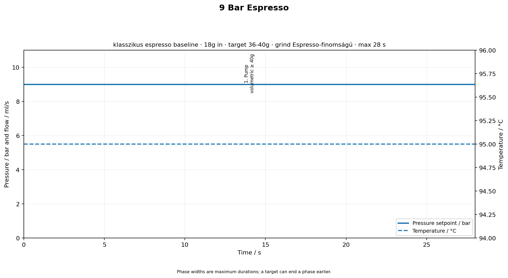
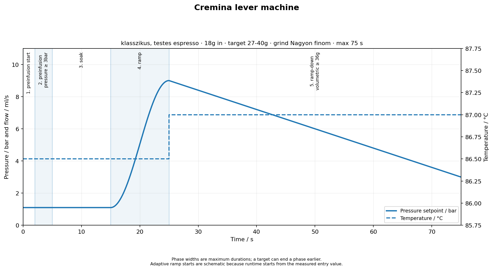
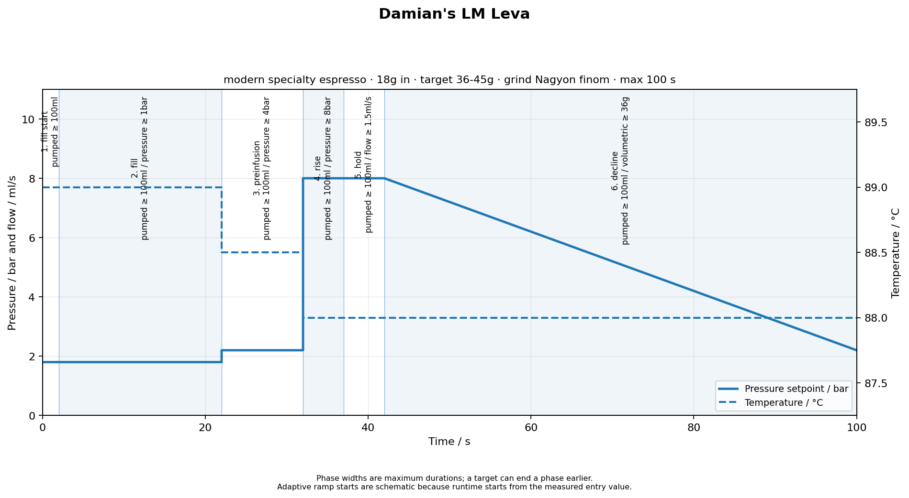
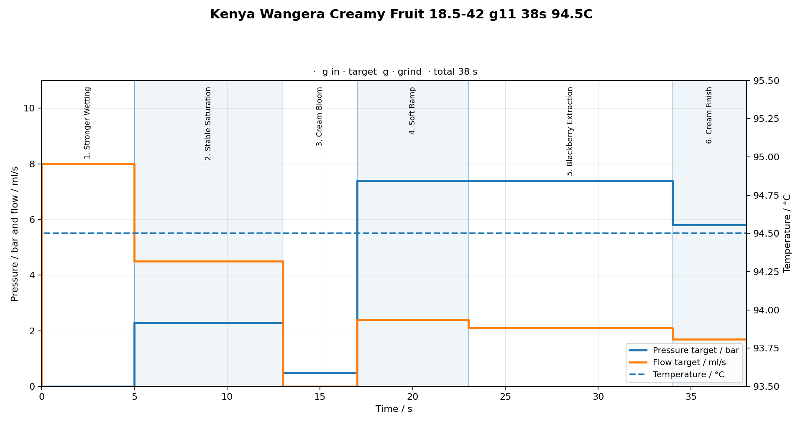
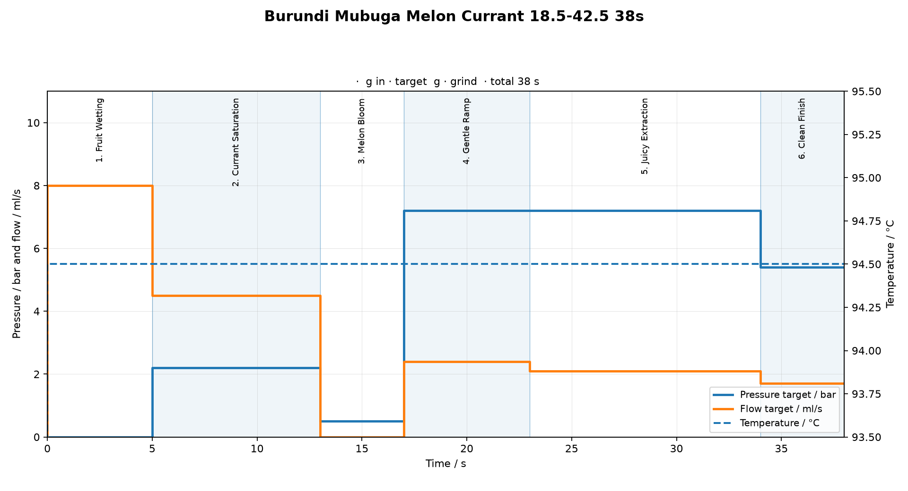
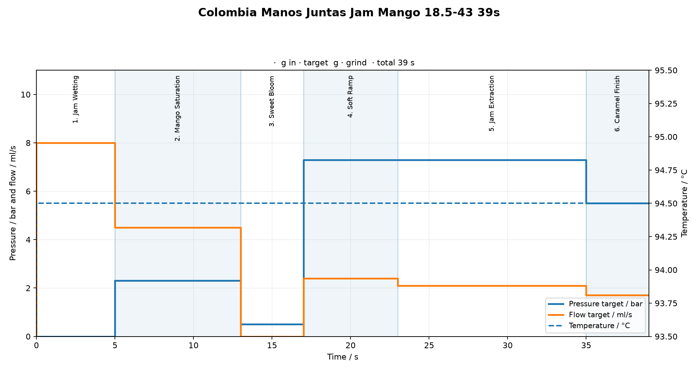
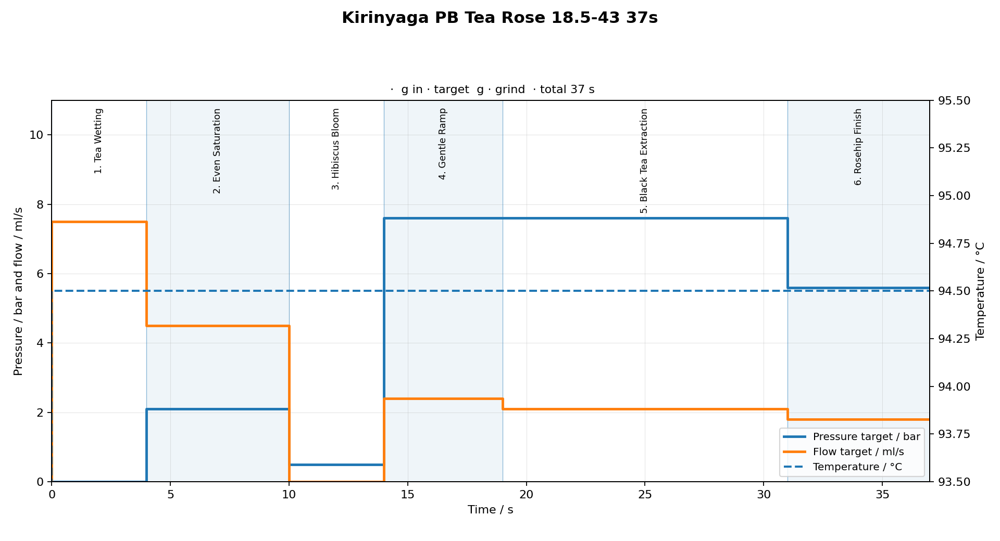
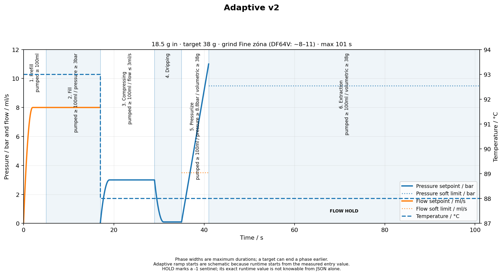
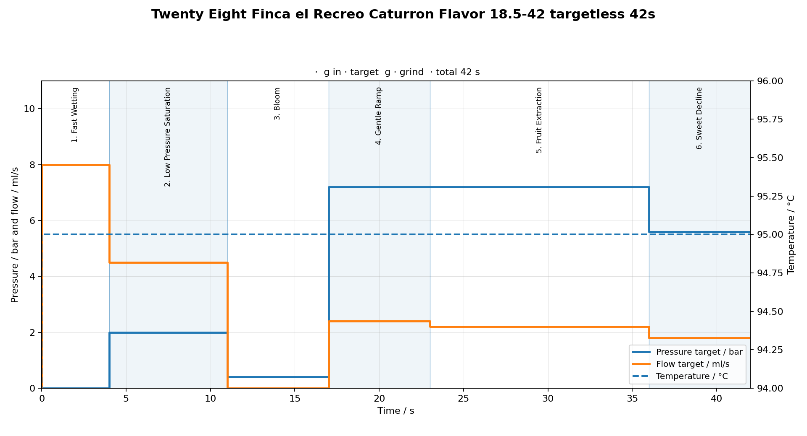

Aktív espresso profilok
9 Bar Espresso
Klasszikus baseline
közepes / sötét
csoki
mogyoró
karamell
18.5 gdózis
36-40 ghozam
95 °Chő
28 sidő

Pumpbrew28 s
Cremina lever machine
Sötét pörkölésű, lever-style
közepes-sötét / sötét
édes
kerek
csokis-diós
18.5 gdózis
27-40 ghozam
86.5 °Chő
40-60 sidő

preinfusion startPI2 s
preinfusionPI3 s
soakPI10 s
rampbrew10 s
ramp-downbrew50 s
Damian\'s LM Leva
Modern specialty, lever-style
világos-közepes / közepes
tiszta
gyümölcsös
hosszú lefolyás
18.5 gdózis
36-45 ghozam
89 °Chő
20-45 sidő

fill startPI2 s
fillPI20 s
preinfusionPI10 s
risebrew5 s
holdbrew5 s
declinebrew58 s
Kenya Wangera — Stable Start
Impresso · Kenya, Nyeri / Kirinyaga
washed
szeder
tejszín
pomelo
18.5 gdózis
42 ghozam
94.5 °Chő
38 sidő

Stronger WettingPI5 s
Stable SaturationPI8 s
Cream BloomPI4 s
Soft Rampbrew6 s
Blackberry Extractionbrew11 s
Cream Finishbrew4 s
Burundi Mubuga — Melon Currant
Impresso · Burundi, Ngozi, Mubuga
natural
sárgadinnye
alma
ribizli
18.5 gdózis
42.5 ghozam
94.5 °Chő
38 sidő

Fruit WettingPI5 s
Currant SaturationPI8 s
Melon BloomPI4 s
Gentle Rampbrew6 s
Juicy Extractionbrew11 s
Clean Finishbrew4 s
Colombia Manos Juntas — Jam Mango
Impresso · Colombia, Cauca, Manos Juntas
anaerobic natural
vörösáfonya dzsem
karamell
mangó
18.5 gdózis
43 ghozam
94.5 °Chő
39 sidő

Jam WettingPI5 s
Mango SaturationPI8 s
Sweet BloomPI4 s
Soft Rampbrew6 s
Jam Extractionbrew12 s
Caramel Finishbrew4 s
Kenya Kirinyaga PB — Tea Rose
Impresso · Kenya, Kirinyaga
washed
hibiszkusz
csipkebogyó
fekete tea
18.5 gdózis
43 ghozam
94.5 °Chő
37 sidő

Tea WettingPI4 s
Even SaturationPI6 s
Hibiscus BloomPI4 s
Gentle Rampbrew5 s
Black Tea Extractionbrew12 s
Rosehip Finishbrew6 s
Adaptive v2 — Univerzális
Light to Medium · Fine grind · 1:2–2.5
univerzális
adaptív PI
flow-hold
93/88 °C
18.5 gdózis
38 ghozam
88 °Cextr. hő
25–40 sidő

PrefillPI≤5 s
FillPI≤12 s
CompressingPI≤12 s
DrippingPI6 s
Pressurizebrew≤6 s
Extractionbrew≤60 s
Twenty Eight Caturron — Flavor
Twenty Eight · Finca el Recreo, Guatemala
natural
meggy
konyakmeggy
bonbonos édesség
18.5 gdózis
42 ghozam
95 °Chő
42 sidő

Fast WettingPI4 s
Low Pressure Sat.PI7 s
BloomPI6 s
Gentle Rampbrew6 s
Fruit Extractionbrew13 s
Sweet Declinebrew6 s
Equipment
Gép
Gaggia Classic Pro 2025
Vezérlő
GaggiMate Pro
Daráló
DF64V Gen 2
Kések
SSP Sweet Lab Espresso V3
Kosár
IMS B682TH24.5M
Puck screen
IMS E&B Lab, Ø 2.4 mm, 253 lyuk (DS58.5)
Mérleg
BOOKOO Themis Ultra
Kapcsolat
Bluetooth
RPM
1200 (800–1800)
Őrlőskála
0–90, egész jelölések
Dózis
18.5 g
Profilok összehasonlítása
| Kávé | Feldolgozás | Hő | Sat. | Extract | Finish | Grind | Hozam | Idő |
|---|---|---|---|---|---|---|---|---|
| Kenya Wangera | washed | 94.5 °C | 2.3 bar | 7.4 bar | 5.8 bar | 10–11 | 42 g | 38 s |
| Burundi Mubuga | natural | 94.5 °C | 2.2 bar | 7.2 bar | 5.4 bar | 10–11 | 42.5 g | 38 s |
| Colombia Manos Juntas | anaerobic natural | 94.5 °C | 2.3 bar | 7.3 bar | 5.5 bar | 10–11 | 43 g | 39 s |
| Kenya Kirinyaga PB | washed | 94.5 °C | 2.1 bar | 7.6 bar | 5.6 bar | 9–10 | 43 g | 37 s |
| Twenty Eight Caturron | natural | 95.0 °C | 2.0 bar | 7.2 bar | 5.6 bar | 8–10 | 42 g | 42 s |
V3 vs V4
| V3 – Time Based | V4 – Scale Edition | |
|---|---|---|
| Shot stop | Időalapú (fix s) | Beverage weight (g) |
| Mérleg | Kézi figyelés | Automatikus Bluetooth stop |
| Konzisztencia | Flow-függő | Reprodukálható hozam |
| Fallback | Nincs | Phase duration hard cap |
| JSON target | — | volumetric gte X az extraction fázisban |
A darálási útmutató betöltéséhez válaszd a Darálás menüpontot.
Profil készítés
Kiindulópont – feldolgozás alapján
| Feldolgozás | Alap profil | Logika |
|---|---|---|
| Washed Kenya / Ethiopia | Kirinyaga Tea Rose | Magasabb főnyomás, rövidebb idő, élénk savak |
| Natural Burundi / Ethiopia | Burundi Mubuga | Közepes nyomás, édesség megőrzése |
| Anaerobic / Honey | Colombia Manos Juntas | Hosszabb extraction, szirupos test |
| Natural Guatemala / Közép-Amerika | Twenty Eight Caturron | Magasabb hő, hosszabb bloom |
| Általános washed | Kenya Wangera | Stable start, bevált baseline |
Paraméter hatások
| Paraméter | Alacsonyabb | Magasabb |
|---|---|---|
| Hőmérséklet | Kevesebb sav, több édesség | Több sav, több aroma, keserűség kockázat |
| Extraction nyomás | Lágy, kerek, kevesebb kinyerés | Intenzív, több test, over-extraction kockázat |
| Finish nyomás | Lágy lecsengés | Kemény lecsengés, channeling kockázat |
| Flow limit (extraction) | Lassabb, több kinyerés | Gyorsabb, kevesebb kinyerés |
| Hozam (gramm) | Tömörebb, intenzívebb, édesebb | Könnyedebb, több savasság, over-extraction kockázat |
| Saturation idő | Gyorsabb nedvesítés | Egyenletesebb szaturáció, kevesebb channeling |
Fázis blueprint (meglévő profilok alapján)
| # | Fázis | Kat. | Idő | Target | Nyomás | Flow | Transition |
|---|---|---|---|---|---|---|---|
| 1 | Wetting | PI | 4–5 s | flow | 0 | 7.5–8.0 g/s | ease-out / 2 s / adaptive |
| 2 | Saturation | PI | 6–8 s | pressure | 2.0–2.3 bar | 4.5 g/s | instant / 0 s / adaptive |
| 3 | Bloom | PI | 4–6 s | pressure | 0.4–0.5 bar | 0 | ease-out / 2 s / adaptive |
| 4 | Ramp | brew | 5–6 s | pressure | 7.2–7.6 bar | 2.4 g/s | linear / 5–6 s / adaptive |
| 5 | Extraction | brew | 11–13 s (V3) / 30 s cap (V4) | pressure | 7.2–7.6 bar | 2.1–2.2 g/s | instant / 0 s / adaptive |
| 6 | Finish | brew | 4–6 s | pressure | 5.4–5.8 bar | 1.7–1.8 g/s | linear / 4–7 s / adaptive |
Fájlnév konvenció
| Fájl | Minta |
|---|---|
| Könyvtár | profiles/{eredet-kave}/ |
| JSON (V3) | {kave}-{ido}[{ho}].json |
| JSON (V4) | {v3-stem}-scale-v4.json |
| PNG | {json-stem}-profile.png — auto: python3 tools/render_profiles.py |
| Recept | {konyvtar}-recipe.md |
| Changelog | {konyvtar}-changelog.md |
Firmware séma – GaggiMate Pro 1.8.1
A JSON gyökérben csak a séma által definiált mezők érvényesek (
additionalProperties: false). Dokumentációt ne tárolj a JSON-ban. A _ prefix-szel kezdődő mezők (pl. _recipe) annotációs mezők: a firmware figyelmen kívül hagyja őket.Gyökér mezők
| Mező | Típus | Leírás |
|---|---|---|
label | string | UI-ban megjelenő profilnév |
type | "pro" | Mindig pro — multi-phase, PID vezérlés |
description | string | Rövid egysoros összefoglaló |
temperature | 0–150 °C | Boiler setpoint; fázisok felülírhatják |
utility | boolean | false brew profiloknál |
phases | array | Fázisok listája, sorban futnak le (min. 1) |
Pump mezők
| Mező | Tartomány | Szerep |
|---|---|---|
target: "pressure" | — | Nyomás a setpoint, flow a soft limit |
target: "flow" | — | Flow a setpoint, nyomás a soft limit |
pressure | 0–12 bar | Setpoint vagy soft limit; 0 = nincs limit; -1 = tartsd a mért értéket |
flow | 0–15 g/s | Setpoint vagy soft limit; 0 = nincs limit; -1 = tartsd a mért értéket |
Transition típusok
| type | Leírás |
|---|---|
instant | Azonnali ugrás |
linear | Egyenletes ramp |
ease-in | Lassan indul, gyorsul |
ease-out | Gyorsan indul, lassan ér célt — ajánlott PI fázisokhoz |
ease-in-out | Lassan indul, gyorsul, lassan ér célt |
adaptive: true — a ramp a ténylegesen mért értékből indul, nem a setpointból. Ajánlott preinfusion → brew átmenetnél.Target típusok
| type | Egység | Megjegyzés |
|---|---|---|
volumetric | gramm | Bluetooth scale + brew-by-weight mód szükséges. Ha hiányzik, csendesen nem tüzel — a duration veszi át. |
pressure | bar | Jelenlegi mért nyomás |
flow | ml/s | Jelenlegi mért flow |
pumped | ml | Fázisban pumpált víz mennyisége — fázis határon nullázódik |
operator csak "gte" vagy "lte" lehet, kisbetűvel. Bármely más string → firmware alapértelmezése lte, ami hibás viselkedést okoz.pro típus viselkedése
| Szabály | Részlet |
|---|---|
duration | Mindig hard cap — a target csak hamarabb zárhatja a fázist, tovább nem tarthatja nyitva |
| Max. duration | 300 s / fázis |
| Target kiértékelés | Minden 100 ms-ban |
| Target logika | OR — az első tüzelő target azonnal zárja a fázist |
Minimális V4 JSON sablon
{
"label": "Kávé – 18.5g / stop 42g / 94.5C / grind 10-11",
"type": "pro",
"description": "Kávé Scale V4 – 18.5 g / stop 42g volumetric / 94.5C / grind 10-11",
"temperature": 94.5,
"utility": false,
"phases": [
{
"name": "Wetting", "phase": "preinfusion", "valve": 1, "duration": 5,
"temperature": 94.5,
"transition": { "type": "ease-out", "duration": 2, "adaptive": true },
"pump": { "target": "flow", "pressure": 0, "flow": 8.0 }
},
{
"name": "Saturation", "phase": "preinfusion", "valve": 1, "duration": 8,
"temperature": 94.5,
"transition": { "type": "instant", "duration": 0, "adaptive": true },
"pump": { "target": "pressure", "pressure": 2.3, "flow": 4.5 }
},
{
"name": "Bloom", "phase": "preinfusion", "valve": 1, "duration": 4,
"temperature": 94.5,
"transition": { "type": "ease-out", "duration": 2, "adaptive": true },
"pump": { "target": "pressure", "pressure": 0.5, "flow": 0 }
},
{
"name": "Ramp", "phase": "brew", "valve": 1, "duration": 6,
"temperature": 94.5,
"transition": { "type": "linear", "duration": 6, "adaptive": true },
"pump": { "target": "pressure", "pressure": 7.4, "flow": 2.4 }
},
{
"name": "Extraction", "phase": "brew", "valve": 1, "duration": 30,
"temperature": 94.5,
"transition": { "type": "instant", "duration": 0, "adaptive": true },
"pump": { "target": "pressure", "pressure": 7.4, "flow": 2.1 },
"targets": [{ "type": "volumetric", "operator": "gte", "value": 42.0 }]
},
{
"name": "Finish", "phase": "brew", "valve": 1, "duration": 8,
"temperature": 94.5,
"transition": { "type": "linear", "duration": 4, "adaptive": true },
"pump": { "target": "pressure", "pressure": 5.8, "flow": 1.7 }
}
]
}